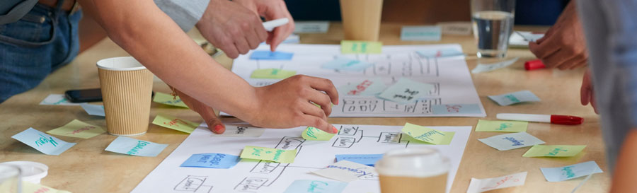

6 Benefits for the organisation
The benefits of effective team working can be considerable for an organisation, for example:
- successful achievement of organisational objectives
eg to meet or exceed sales or production targets - access to a wide range of talents and strengths within the workforce
eg pooling different talents that work together well to achieve major goals - good internal communications
eg where team members and different teams communicate well with each other to improve operational productivity - increased efficiency and less duplication of work
eg where teams understand each other’s tasks and needs, then work together to streamline their operations - a more flexible workforce
eg where team members can cover for each other and perform a variety of tasks to maintain consistency and continuity - better relationships with customers
eg from offering consistently high-quality customer service - better relationships with others connected to the organisation
eg from having a reputation for being a reliable, consistent and smooth-running operation.